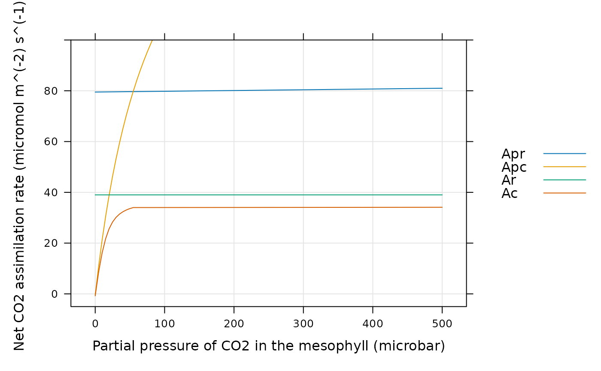

Calculate C4 assimilation rates
calculate_c4_assimilation.RdCalculates C4 assimilation rates based on the Farquhar-von-Caemmerer-Berry model. This function can accomodate alternative colum names for the variables taken from Licor files in case they change at some point in the future. This function also checks the units of each required column and will produce an error if any units are incorrect.
Usage
calculate_c4_assimilation(
exdf_obj,
Rd,
Vcmax,
Vpmax,
Vpr,
POm = 210000,
gbs = 0.003,
Rm_frac = 0.5,
alpha = 0,
pcm_column_name = 'PCm',
kc_column_name = 'Kc',
ko_column_name = 'Ko',
kp_column_name = 'Kp',
gamma_star_column_name = 'gamma_star',
ao_column_name = 'ao',
vcmax_norm_column_name = 'Vcmax_norm',
vpmax_norm_column_name = 'Vpmax_norm',
rd_norm_column_name = 'Rd_norm',
perform_checks = TRUE,
return_exdf = TRUE
)Arguments
- exdf_obj
An
exdfobject.- Rd
The total rate of mitochondrial respiration across the mesophyll and bundle sheath at 25 degrees C, expressed in
micromol m^(-2) s^(-1).- Vpmax
The maximum rate of PEP carboxylase activity at 25 degrees C, expressed in
micromol m^(-2) s^(-1).- Vcmax
The maximum rate of rubisco carboxylation at 25 degrees C, expressed in
micromol m^(-2) s^(-1).- Vpr
The rate of PEP carboxylase regeneration, expressed in
micromol m^(-2) s^(-1).- POm
The partial pressure of O2 in the mesophyll, expressed in
microbar. This is often assumed to be the ambient value. For air measurements, this would be 21 percent O2, which is about 210000 microbar at standard atmospheric pressure. For low oxygen measurements, this would be 2 percent O2, which is about 20000 microbar.- gbs
The bundle sheath conductance to CO2 in
mol m^(-2) s^(-1) bar^(-1).- Rm_frac
The fraction of the total mitochondrial respiration that occurs in the mesophyll.
- alpha
The fraction of photosystem II activity in the bundle sheath.
- pcm_column_name
The name of the column in
exdf_objthat contains the partial pressure of CO2 in the mesophyll, expressed inmicrobar.- kc_column_name
The name of the column in
exdf_objthat contains the Michaelis-Menten constant for rubisco carboxylation inmicrobar.- ko_column_name
The name of the column in
exdf_objthat contains the Michaelis-Menten constant for rubisco oxygenation inmbar.- kp_column_name
The name of the column in
exdf_objthat contains the Michaelis-Menten constant for PEP carboxylase carboxylation inmicrobar.- gamma_star_column_name
The name of the column in
exdf_objthat contains the dimensionlessgamma_starvalues.- ao_column_name
The name of the column in
exdf_objthat contains the dimensionless ratio of solubility and diffusivity of O2 to CO2.- vcmax_norm_column_name
The name of the column in
exdf_objthat contains the normalizedVcmaxvalues (with units ofnormalized to Vcmax at 25 degrees C).- vpmax_norm_column_name
The name of the column in
exdf_objthat contains the normalizedVpmaxvalues (with units ofnormalized to Vpmax at 25 degrees C).- rd_norm_column_name
The name of the column in
exdf_objthat contains the normalizedRdvalues (with units ofnormalized to Rd at 25 degrees C).- perform_checks
A logical value indicating whether to check units for the required columns. This should almost always be
TRUE. The option to disable these checks is only intended to be used whenfit_c4_acicalls this function, since performing these checks many times repeatedly slows down the fitting procedure.- return_exdf
A logical value indicating whether to return an
exdfobject. This should almost always beTRUE. The option to return a vector is mainly intended to be used whenfit_c4_acicalls this function, since creating anexdfobject to return will slow down the fitting procedure.
Details
General Description of the Model
This function generally follows Section 4.2.1 from S. von Caemmerer (2000),
which provides equations for calculating the enzyme-limited net assimilation
rate An in a C4 leaf. (These equations are also reproduced in S. von
Caemmerer (2021), although we use the equation numbers from the 2000 textbook
here.) The net assimilation rate in this model is calculated according to
Equation 4.21:
An = (-b - sqrt(b^2 - 4 * a * c)) / (2 * a)
where the parameters a, b, and c are determined by
Equations 4.22, 4.23, and 4.24, respectively. These equations are fairly long,
so we do not reproduce them here.
An Approximation to the Full Equations
The complicated equations above can be approximiated by a simpler one (Equation 4.25):
An = min(Vp + gbs * PCm - Rm, Vcmax - Rd)
where Vp is the rate of PEP carboxylation, gbs is the bundle
sheath conductance to CO2, PCm is the partial pressure of CO2 in the
mesophyll, Rm is the rate of mitochondrial respiration occuring in the
mesophyll, Vcmax is the maximum rate of Rubisco carboxylation, and
Rd is the rate of mitochondrial respiration occurring in the bundle
sheath and mesophyll. Essentially, the first term in the equation above
(Vp + gbs * PCm - Rm) can be thought of as a PEP-carboxylase-limited
assimilation rate Ap, while the second term (Vcmax - Rd) is a
Rubisco-limited rate Ar.
The PEP carboxylation rate Vp is calculated according to Equation 4.19:
Vp = min(Pcm * Vpmax / (PCm + Kp), Vpr)
where Vpmax is the maximum rate of PEP carboxylation, Kp is a
Michaelis-Menten constant for PEP carboxylation, and Vpr is the
carboxylation rate when PEP carboxylase activity is limited by regeneration
rather than carbon availability. Thus, we can see that the approximation above
actually calculates the net assimilation rate as the smaller of three separate
assimilation rates:
An = min(Apc, Apr, Ar)
where Apc = Pcm * Vpmax / (PCm + Kp) + gbs * PCm - Rm is the rate due
to carbon-limited PEP carboxylation, Apr = Vpr + gbs * PCm - Rm is the
rate due to regeneration-limited PEP carboxylation, and Ar = Vcmax - Rd
is the rate due to Rubisco-limited assimilation.
In the example at the end of this documentation page, we compare Apc,
Apr, and Ar to An as calculated by Equation 4.21. From
this example, it is clear that the approximation An = min(Apc, Apr, Ar)
is quite accurate for low values of PCm, but introduces significant
errors as PCm increases. Thus, while the approximation can be helpful
for gaining an intuitive understanding of C4 photosynthesis, it should not be
used for realistic calculations.
To be more precise, the approximation is only reliable when Vcmax is
much larger than gbs * Kc * (1 + POm / Ko), which is rarely the case;
otherwise, the limiting value of An at high PCm will be smaller
than Ar = Vcmax - Rd. Conversely, if gbs and alpha are
both set to zero, then the approximation is exact.
Limiting Cases of the Approximate Equation
The bundle sheath conductance gbs is generally very small and can be
ignored in a simple analysis of the above equations. In that case, when
Pcm is very high, the approximate equation for An simplifies
further to:
An = min(Vpmax - Rm, Vpr - Rm, Vcmax - Rd)
Since respiration costs are also generally much smaller than the maximum
enzyme activity and regeneration rates, the assimilation rate at high levels
of CO2 is therefore determined by the smaller of Vpmax, Vpr, and
Vcmax. As shown in Table 4.1 of the textbook, Vpmax is typically
much larger than the other two rates, so high CO2 assimilation in C4 leaves is
usually limited by either Vpr or Vcmax. The exact limiting
factor can depend on many possible variables, such as the temperature. For
example, see Wang (2008).
At lower values of PCm, net assimilation is determined by CO2-limited
PEP carboxylation according to:
An = PCm * Vpmax / Kp - Rm
where we have approximated gbs * PCm = 0 and PCm + Kp = Kp, as
appropriate for small values of Pcm. Thus, we can see that for low CO2
levels, assimilation is linearly related to PCm with a slope of
Vpmax / Kp and intercept of -Rm.
Respiration
Table 4.1 from von Caemmerer (2000) suggests that Rd = 0.01 * Vcmax and
Rm = 0.5 * Rd. To allow more flexibility, we allow Rd to be
specified independently of Vcmax, and we also consider the ratio of
Rm / Rd = Rm_frac to be a variable (so that Rm is calculated
from Rd according to Rm = Rm_frac * Rd). If Rm_frac is
set to 1, then there is no distinction between Rd and Rm.
References
von Caemmerer, S. "Biochemical Models of Leaf Photosynthesis" (CSIRO Publishing, 2000) [doi:10.1071/9780643103405 ].
von Caemmerer, S. "Updating the steady-state model of C4 photosynthesis." Journal of Experimental Botany 72, 6003–6017 (2021) [doi:10.1093/jxb/erab266 ].
Wang, D., Portis, A. R., Jr., Moose, S. P. & Long, S. P. "Cool C4 Photosynthesis: Pyruvate Pi Dikinase Expression and Activity Corresponds to the Exceptional Cold Tolerance of Carbon Assimilation in Miscanthus × giganteus." Plant Physiology 148, 557–567 (2008) [doi:10.1104/pp.108.120709 ].
Value
The return value depends on the value of return_exdf:
If
return_exdfisTRUE, the return value is anexdfobject with the following columns, calculated as described above:Vcmax_tl,Vpmax_tl,Rd_tl,Rm_tl,Vp,Apc,Apr,Ap,Ar, andAn. The category for each of these new columns iscalculate_c4_assimilationto indicate that they were created using this function.If
return_exdfisFALSE, the return value is a numeric vector containing the calculated values ofAn.
Examples
# Simulate a C4 A-Cm curve with specified leaf temperature and photosynthetic
# parameters and plot the net assimilation rate.
npts <- 101
inputs <- exdf(data.frame(
PCm = seq(0, 500, length.out = npts),
Tleaf = 25
))
inputs <- document_variables(
inputs,
c('', 'PCm', 'microbar'),
c('', 'Tleaf', 'degrees C')
)
inputs <- calculate_arrhenius(inputs, c4_arrhenius_von_caemmerer, 'Tleaf')
assim <- calculate_c4_assimilation(inputs, 1, 40, 200, 80)
# Now we can plot An, Apr, Apc, and Ar. From this plot, we can see that
# replacing the complicated quadratic equation with a simple minimum yields
# very different results. Although this approximation is helpful for
# understanding C4 photosythesis, it should not be used for calculations.
lattice::xyplot(
Apr + Apc + Ar + An ~ PCm,
data = cbind(inputs, assim)$main_data,
type = 'l',
grid = TRUE,
auto = TRUE,
xlab = paste0('Partial pressure of CO2 in the mesophyll (', inputs$units$PCm, ')'),
ylab = paste0('Net CO2 assimilation rate (', assim$units$An, ')')
)
